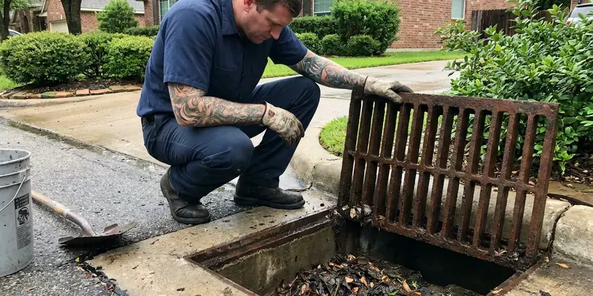

Water Heater Maintenance in Sheboygan, WI
Water heater maintenance in Sheboygan, WI for tank and tankless units, covering flushing, anode checks and safety valve testing.
- Clear pricing
- Fast, Reliable Service
- Guaranteed Workmanship
- Expert, Certified Plumbers

Prevent Expensive Breakdowns With Maintenance in Sheboygan, WI.
We service gas and electric units from all major brands, in garages, closets and crawl spaces.
Trusted Water Heater Maintenance Services for Sheboygan, WI Homes
HKV Plumbing specializes in complete water heater maintenance, keeping your unit running at peak efficiency and safety. Our services in Sheboygan, WI are designed to prevent everyday issues like sediment buildup, corrosion, and pilot light problems before they become major repairs.
Our expertise includes:
- Tankless descaling with pump kits through isolation valves
- Anode rod inspection and replacement with the correct type
- Full tank flushes to remove hard water sediment

Additional Plumbing Maintenance Services in Sheboygan, WI
Our maintenance and specialty plumbing services in Sheboygan, WI catch small problems before they become emergencies.


Customers
Why Choose HKV Plumbing for Water Heater Maintenance in Sheboygan, WI?
Regular maintenance is key to avoiding sudden water heater failures. Summer humidity brings condensation on cold pipes in basements around Sheboygan, which can lead to drips and musty odors. It protects your investment and keeps a steady supply of hot water flowing to your home.
- Safety First, Inspecting components like the pressure relief valve keeps your water heater running safely, limiting risks like leaks or pressure buildup.
- Extended Lifespan, Regular service, including flushing sediment, can add years to your water heater's operational life.
- Warranty Support, Regular service records help keep manufacturer warranties valid.
Citywide Coverage
HKV Plumbing provides extensive water heater maintenance coverage across every neighborhood of Sheboygan. Whether you're in an older district or a newer subdivision, our plumbers are equipped to reach you promptly.
Experienced Team
The HKV Plumbing team is highly skilled at diagnosing and addressing potential issues during water heater maintenance. We pride ourselves on thorough, accurate service that keeps your system performing well and safely.
Safety-First Approach
During maintenance, we thoroughly check for any potential safety hazards, such as gas leaks, carbon monoxide risks, or faulty electrical connections. Our safety checks are a cornerstone of our water heater maintenance service.
Trusted Certified Sheboygan Plumbing Services Professionals
At HKV Plumbing, we take pride in providing certified plumbing services throughout Sheboygan, WI. Backed by recognized industry credentials, our experienced plumbers combine technical skill with genuine customer care. Whether it is repair, installation, or maintenance, we follow strict safety and quality standards to deliver long-lasting results you can trust.
Call Us Now PHCC Plumbing Contractor Recognition
PHCC Plumbing Contractor Recognition Better Business Bureau (BBB) Accreditation
Better Business Bureau (BBB) Accreditation Angi Certified Pro
Angi Certified Pro ISO 9001 Quality Management Certification
ISO 9001 Quality Management CertificationReliable Water Heater Maintenance Services in Sheboygan, WI
Maintenance Cost Versus Replacement in Sheboygan, WI
A water heater tune-up costs a fraction of a new unit, which can run well over a thousand dollars installed. Regular flushing and anode replacement can help a tank reach the high end of its expected lifespan. Tankless units in particular can last many years with proper descaling. If your heater is near the end of its life or leaking from the tank, we will tell you plainly. We help you weigh repair against replacement with real numbers.

Electric Water Heater Tune-Up in Sheboygan
For electric water heaters, our maintenance service focuses on checking heating elements, thermostats, and electrical connections. We confirm proper wiring and test for any short circuits or power problems that could affect performance. Sediment flushing is also performed, just like with gas models, to prevent buildup and protect the lower heating element from burning out prematurely in Sheboygan.
T&P Valve and Safety Testing in Sheboygan, WI
The temperature and pressure relief valve keeps your water heater from building unsafe pressure. We test it by lifting the lever and checking that it opens and reseats. A valve that leaks or will not open gets swapped out. We also check that the discharge pipe runs to an approved location. Expansion tanks are checked for proper air charge if you have one.
Anode Rod Inspection and Replacement in Sheboygan
The anode rod is a sacrificial part in your water heater designed to corrode instead of the tank itself. Depending on your water chemistry, these rods can wear down faster than you might think. During maintenance, we inspect the anode rod's condition and recommend replacement if necessary. A healthy anode rod is key for preventing rust and extending the lifespan of your water heater tank, saving you from a costly full replacement.
Gas Water Heater Safety Checks in Sheboygan, WI
Gas water heater maintenance involves important safety inspections in Sheboygan, WI. We check for gas leaks, proper venting of exhaust gases, and the function of the pilot light or igniter. We also clean the burner assembly and inspect the thermocouple. These checks are essential to prevent carbon monoxide exposure and keep your gas-fired appliance running safely.
Preventative Maintenance Plans in Sheboygan, WI
HKV Plumbing offers complete preventative maintenance plans for homeowners in Sheboygan, WI. These plans include annual or twice-yearly service appointments, priority scheduling, and sometimes discounts on repairs. Enrolling in a plan gives your water heater consistent professional care, helping you avoid unexpected breakdowns and keep peak efficiency year-round. It's an investment in long-term peace of mind.
Electric Water Heater Element Service in Sheboygan, WI
Electric water heaters use upper and lower heating elements controlled by thermostats. Sediment can coat the lower element and cause it to fail. We test both elements and thermostats with the power off and replace parts as needed. A failed element is often the reason for lukewarm water or running out of hot water quickly. Proper testing avoids replacing parts that are still good.

Preventative Maintenance for All Brands in Sheboygan
Our team is experienced in maintaining all major water heater brands, including Rheem, AO Smith, Bradford White, Noritz, Rinnai, and more. No matter your unit's manufacturer, we have the tools and knowledge to perform the necessary checks and adjustments. We follow manufacturer guidelines so your warranty stays valid and your model gets the exact care it needs to run efficiently and reliably in your Sheboygan home.
Water Heater Maintenance Near Me in Sheboygan, WI
Looking for dependable water heater maintenance "near me" in Sheboygan, WI? HKV Plumbing is your local expert, providing prompt and professional service right in your neighborhood. We understand the needs of homes in this area and are always prepared to respond.
Our local team services water heaters in Sheboygan every day. We know the brands and installation styles common in area homes, from garage tanks to attic units and wall-mounted tankless heaters. Most maintenance visits take about an hour.
HKV Plumbing at a Glance
- Licensed and insured plumbers serving Sheboygan, WI
- Same-day appointments and 24/7 emergency response
- Clear written estimates, no hidden fees
- 4.8-star rated by 448+ Wisconsin customers
Sheboygan Map
Sheboygan Information
- Population
- 49,686
- Area codes
- 920/414/262
- Service area
- Sheboygan and communities within 40 miles
- Nearby
- Oshkosh, Milwaukee, Wauwatosa, Appleton
Regular water heater maintenance is particularly valuable for homes in Sheboygan, WI, where water hardness and seasonal temperature swings can accelerate wear on your hot water system. Summer humidity brings condensation on cold pipes in basements around Sheboygan, which can lead to drips and musty odors.
Expert Services
Trust our professionals for reliable HKV Plumbing solutions in Sheboygan, WI.
Our Specialized Plumbing Services in Sheboygan, WI
At HKV Plumbing, we provide a complete range of plumbing services across Sheboygan, WI. From leak detection to full system installations, our team ensures fast, precise, and affordable service for both residential and commercial properties. Explore our core services below:


How Our Water Heater Maintenance Process Works in Sheboygan, WI
We follow a step-by-step approach to water heater maintenance, so every critical component is inspected and serviced for performance and longevity.
Request a Quote
Call us at (414) 432-4641 or fill out our online form to schedule your water heater maintenance. We'll discuss your needs and provide transparent pricing upfront.
On-Site Inspection
Our technician arrives on time, performs a detailed inspection of your water heater, and identifies any potential issues or areas needing attention.
Comprehensive Service
We conduct a full flush, inspect critical components, and make necessary adjustments, so your water heater runs efficiently and safely.
Frequently Asked Questions About Water Heater Maintenance in Sheboygan
The cost of water heater maintenance in Sheboygan, WI typically ranges from $100 to $250, depending on the type of water heater (tank or tankless) and the extent of service required. This usually includes flushing, anode rod inspection, and safety checks. We provide upfront pricing before any work begins.
Popping or rumbling noises, lukewarm water, rusty or smelly hot water, and slow recovery times are typical signs.
Many homeowners can do a basic flush, but older drain valves can break or leak. A pro also tests safety valves, venting and gas lines.
HKV Plumbing stands behind all our services with a robust workmanship warranty. We make sure our maintenance is performed correctly and effectively. Specific warranty details will be provided when service is complete.
Generally, a permit is not required for routine water heater maintenance, since it involves inspections and minor adjustments rather than new installations or major repairs. If a repair during maintenance becomes substantial, we will explain any necessary permits.
Yes, our workmanship and any parts we install are covered by a written warranty.
Sediment buildup consists of mineral deposits, mainly calcium and magnesium, that settle at the bottom of your water heater tank. Water softeners are a common feature in many Wisconsin homes, helping protect water heaters, fixtures and appliances from scale. Sediment reduces efficiency, causes strange noises, and can lead to premature tank failure if not flushed regularly.
With hard water, flushing once a year is recommended. Homes with very hard water or no softener may benefit from flushing every six months.
What People Are Saying About Our Plumbing Experts?

Daniel K.
A pipe burst at 11 pm and they actually answered. The plumber showed up within the hour, shut everything down, and had us back to normal the next morning. Could not ask for more.
Emergency Plumbing · Green Bay, WI
Mark T.
When our office needed drain cleaning, HKV Plumbing provided quick, reliable service. The plumber arrived on time and made sure every drain flowed perfectly before leaving. Very satisfied.
Drain Cleaning · Sheboygan, WI
Sofia M.
Two new toilets installed in one visit, no mess left behind, and the tech even adjusted a faucet he noticed was dripping. Fair pricing and really friendly.
Toilet Installation · West Allis, WILaura S.
I scheduled a water heater replacement, and the team made the process smooth and affordable. The new unit works perfectly, and they cleaned up after completing the job.
Water Heater Replacement · Wauwatosa, WI
Robert G.
The trenchless sewer replacement saved our front yard. They walked us through the camera inspection footage first so we knew exactly what we were paying for.
Sewer Line Replacement · Wauwatosa, WIJames P.
Our commercial plumbing system had a leak under the sink, and HKV Plumbing handled it professionally. The plumbers arrived quickly and restored everything without disruption to our customers.
Commercial Plumbing · West Allis, WI